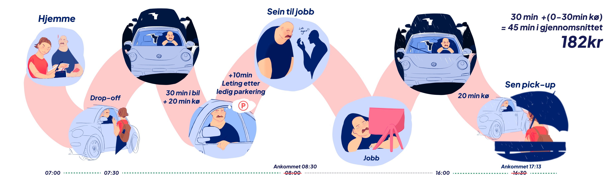
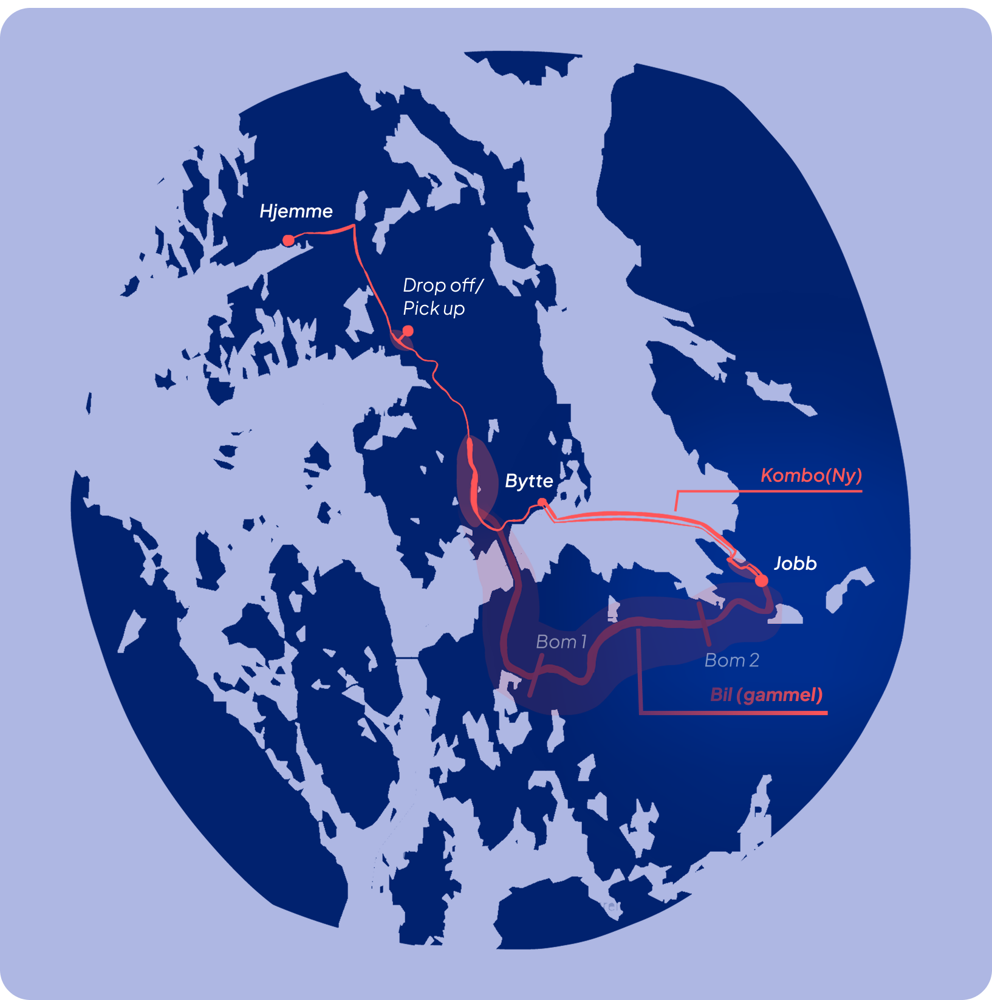
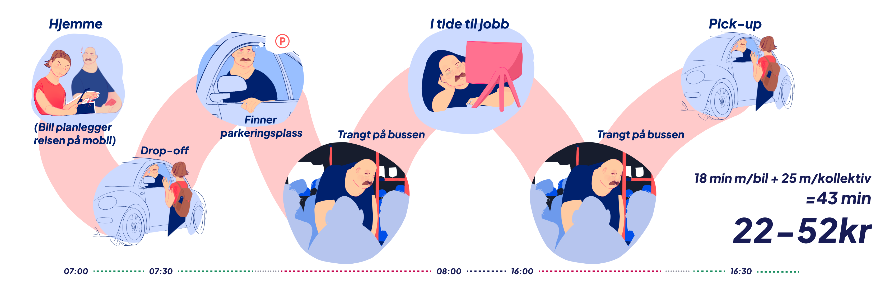
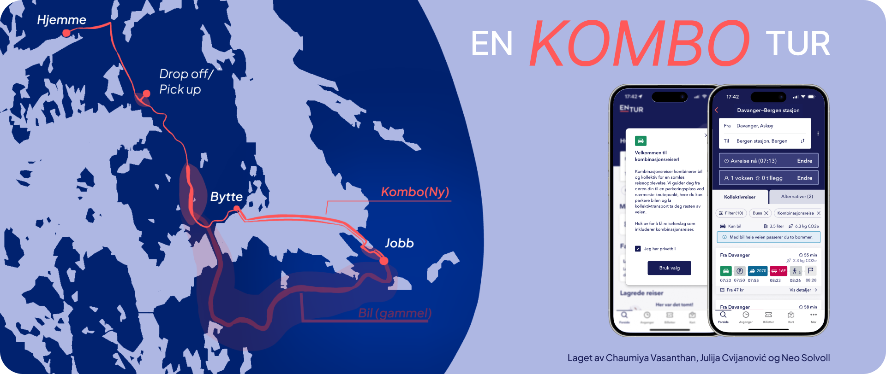
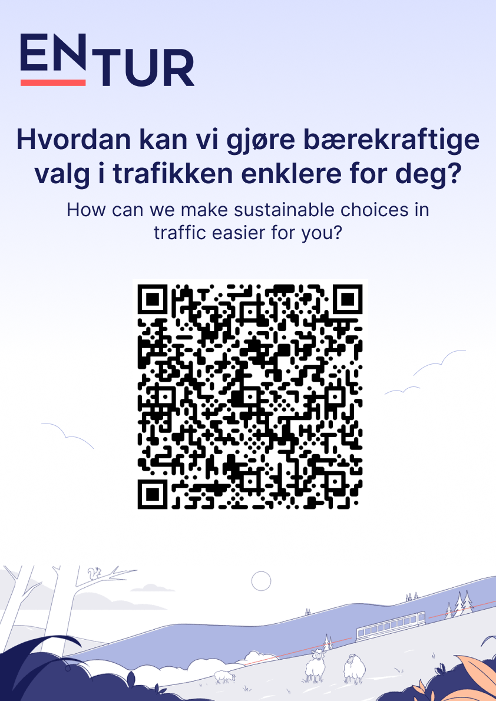

Research question
How can we help car commuters travel more environmentally friendly?
Based on our early concept of how the user can choose the distance of
public transport they’d like, we developed ‘A Combo Trip’.
‘En Kombo Tur’, or ‘A Combo Trip’, is a travel planning service
for commuters with private cars that aims to create a more
customized and seamless public transport experience by guiding you
to optimal public transport hubs and parking spaces.
There are currently no public transport travel planning services
that take into account the fact that people have cars.
The service incorporates the concept that a parking space is
reserved for the user when they choose this type of journey.
This is envisioned in the same way as it is for train passengers
traveling by train.



Project photos
